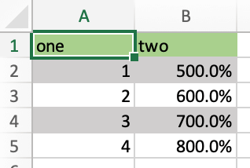
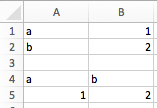
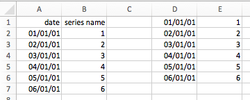

轉換器與選項¶
Introduced with v0.7.0, converters define how Excel ranges and their values are converted both during reading and writing operations. They also provide a consistent experience across xlwings.Range objects and User Defined Functions (UDFs).
Converters are explicitly set in the options method when manipulating Range objects
or in the @xw.arg and @xw.ret decorators when using UDFs. If no converter is specified, the default converter
is applied when reading. When writing, xlwings will automatically apply the correct converter (if available) according to the
object's type that is being written to Excel. If no converter is found for that type, it falls back to the default converter.
All code samples below depend on the following import:
>>> import xlwings as xw
語法：
Action |
Range objects |
UDFs |
|---|---|---|
reading |
|
|
writing |
|
|
備註
Keyword arguments (kwargs) may refer to the specific converter or the default converter.
For example, to set the numbers option in the default converter and the index option in the DataFrame converter,
you would write::
myrange.options(pd.DataFrame, index=False, numbers=int).value
Default Converter¶
If no options are set, the following default conversions are applied when accessing Range.value:
Numbers ->
floatsText ->
strDate and/or time ->
datetimeTRUEorFALSE->boolEmpty cell ->
NoneWindows only: Currency ->
Decimal, truncated to 4 decimals
Columns/rows are read in as lists, e.g. [None, 1.0, 'a string'] and 2d cell ranges are read in as list of lists, e.g. [[None, 1.0, 'a string'], [None, 2.0, 'another string']].
The following options can be set:
ndim¶
Force the value to have either 1 or 2 dimensions regardless of the shape of the range:
>>> import xlwings as xw
>>> sheet = xw.Book().sheets[0]
>>> sheet['A1'].value = [[1, 2], [3, 4]]
>>> sheet['A1'].value
1.0
>>> sheet['A1'].options(ndim=1).value
[1.0]
>>> sheet['A1'].options(ndim=2).value
[[1.0]]
>>> sheet['A1:A2'].value
[1.0 3.0]
>>> sheet['A1:A2'].options(ndim=2).value
[[1.0], [3.0]]
To preserve the vertical orientation of columns, use ndim="natural". This returns scalars for
single cells, 1D lists for horizontal ranges, and 2D lists for vertical or multi-row ranges:
>>> sheet['A1'].value = 1
>>> sheet['A1'].options(ndim="natural").value
1.0
>>> sheet['A1'].value = ["Industry", "Country", "Employees", "Revenue"]
>>> sheet['A1:D1'].options(ndim="natural").value
['Industry', 'Country', 'Employees', 'Revenue']
>>> sheet['A1'].value = [["3M"], ["AbbVie"], ["Apple"]]
>>> sheet['A1:A3'].options(ndim="natural").value # Key difference to default
[['3M'], ['AbbVie'], ['Apple']]
>>> sheet['A1'].value = [[1, 2, 3], [4, 5, 6]]
>>> sheet['A1:C2'].options(ndim="natural").value
[[1, 2, 3], [4, 5, 6]]
numbers¶
By default cells with numbers are read as float, but you can change it to int:
>>> sheet['A1'].value = 1
>>> sheet['A1'].value
1.0
>>> sheet['A1'].options(numbers=int).value
1
Alternatively, you can specify any other function or type which takes a single float argument.
Using this on UDFs looks like this:
@xw.func
@xw.arg('x', numbers=int)
def myfunction(x):
# all numbers in x arrive as int
return x
備註
Excel delivers all numbers as floats in the interactive mode, which is the reason why the int converter rounds numbers first before turning them into integers. Otherwise it could happen that e.g., 5 might be returned as 4 in case it is represented as a floating point number that is slightly smaller than 5. Should you require Python's original int in your converter, use raw int` instead.
dates¶
By default cells with dates are read as datetime.datetime, but you can change it to datetime.date:
Range:
>>> import datetime as dt
>>> sheet['A1'].options(dates=dt.date).value
UDFs (decorator):
@xw.arg('x', dates=dt.date)
Alternatively, you can specify any other function or type which takes the same keyword arguments
as datetime.datetime, for example:
>>> my_date_handler = lambda year, month, day, **kwargs: "%04i-%02i-%02i" % (year, month, day)
>>> sheet['A1'].options(dates=my_date_handler).value
'2017-02-20'
empty¶
Empty cells are converted per default into None, you can change this as follows:
Range:
>>> sheet['A1'].options(empty='NA').value
UDFs (decorator):
@xw.arg('x', empty='NA')
transpose¶
This works for reading and writing and allows us to e.g. write a list in column orientation to Excel:
Range:
sheet['A1'].options(transpose=True).value = [1, 2, 3]UDFs:
@xw.arg('x', transpose=True) @xw.ret(transpose=True) def myfunction(x): # x will be returned unchanged as transposed both when reading and writing return x
expand¶
This works the same as the Range properties table, vertical and horizontal but is
only evaluated when getting the values of a Range:
>>> import xlwings as xw
>>> sheet = xw.Book().sheets[0]
>>> sheet['A1'].value = [[1,2], [3,4]]
>>> range1 = sheet['A1'].expand()
>>> range2 = sheet['A1'].options(expand='table')
>>> range1.value
[[1.0, 2.0], [3.0, 4.0]]
>>> range2.value
[[1.0, 2.0], [3.0, 4.0]]
>>> sheet['A3'].value = [5, 6]
>>> range1.value
[[1.0, 2.0], [3.0, 4.0]]
>>> range2.value
[[1.0, 2.0], [3.0, 4.0], [5.0, 6.0]]
備註
The expand method is only available on Range objects as UDFs only allow to manipulate the calling cells.
chunksize¶
When you read and write from or to big ranges, you may have to chunk them or you will hit a timeout or a memory error. The ideal chunksize will depend on your system and size of the array, so you will have to try out a few different chunksizes to find one that works well:
import pandas as pd
import numpy as np
sheet = xw.Book().sheets[0]
data = np.arange(75_000 * 20).reshape(75_000, 20)
df = pd.DataFrame(data=data)
sheet['A1'].options(chunksize=10_000).value = df
And the same for reading:
# As DataFrame
df = sheet['A1'].expand().options(pd.DataFrame, chunksize=10_000).value
# As list of list
df = sheet['A1'].expand().options(chunksize=10_000).value
err_to_str¶
在 0.28.0 版被加入.
If True, will include cell errors such as #N/A as strings. By default, they
will be converted to None.
formatter¶
在 0.28.1 版被加入.
備註
You can't use formatters with Excel tables.
The formatter option accepts the name of a function. The function will be called after writing the values to Excel and allows you to easily style the range in a very flexible way. How it works is best shown with a little example:
import pandas as pd
import xlwings as xw
sheet = xw.Book().sheets[0]
def table(rng: xw.Range, df: pd.DataFrame):
"""This is the formatter function"""
# Header
rng[0, :].color = "#A9D08E"
# Rows
for ix, row in enumerate(rng.rows[1:]):
if ix % 2 == 0:
row.color = "#D0CECE" # Even rows
# Columns
for ix, col in enumerate(df.columns):
if "two" in col:
rng[1:, ix].number_format = "0.0%"
df = pd.DataFrame(data={"one": [1, 2, 3, 4], "two": [5, 6, 7, 8]})
sheet["A1"].options(formatter=table, index=False).value = df
Running this code will format the DataFrame like this:

The formatter's signature is: def myformatter(myrange, myvalues) where myrange corresponds to the range where myvalues are written to. myvalues is simply what you assign to the value property in the last line of the example. Since we're using this with a DataFrame, it makes sense to name the argument accordingly and using type hints will help your editor with auto-completion. If you would use a nested list instead of a DataFrame, you would write something like this instead:
def table(rng: xw.Range, values: list[list]):
內建轉換器¶
xlwings offers several built-in converters that perform type conversion to dictionaries, NumPy arrays,
Pandas Series and DataFrames. These build on top of the default converter, so in most cases the options
described above can be used in this context, too (unless they are meaningless, for example the ndim in the case
of a dictionary).
It is also possible to write and register a custom converter for additional types, see below.
The samples below can be used with both xlwings.Range objects and UDFs even though only one version may be shown.
字典轉換器¶
The dictionary converter turns two Excel columns into a dictionary. If the data is in row orientation, use transpose:

>>> sheet = xw.sheets.active
>>> sheet['A1:B2'].options(dict).value
{'a': 1.0, 'b': 2.0}
>>> sheet['A4:B5'].options(dict, transpose=True).value
{'a': 1.0, 'b': 2.0}
Note: instead of dict, you can also use OrderedDict from collections.
Tuple converter¶
Get the values as (nested) tuples instead of (nested) lists. This can be helpful in connection with caching, as tuples are immutable and hashable.
>>> sheet = xw.sheets.active
>>> sheet['A1:B2'].options(tuple).value
(('a', 1.0), ('b', 2.0))
JSON 轉換器¶
Read and write values as JSON-formatted strings. This is especially useful to interact with LLMs.
>>> sheet = xw.sheets.active
>>> sheet['A1:C2'].options("json").value
'[["2024-01-01T00:00:00", "text", true], [null, 42.0, false]]'
Numpy array converter¶
options: dtype=None, copy=True, order=None, ndim=None
The first 3 options behave the same as when using np.array() directly. Also, ndim works the same as shown above
for lists (under default converter) and hence returns either numpy scalars, 1d arrays or 2d arrays.
Example
>>> import numpy as np
>>> sheet = xw.Book().sheets[0]
>>> sheet['A1'].options(transpose=True).value = np.array([1, 2, 3])
>>> sheet['A1:A3'].options(np.array, ndim=2).value
array([[ 1.],
[ 2.],
[ 3.]])
Pandas Series converter¶
options: dtype=None, copy=False, index=1, header=True
The first 2 options behave the same as when using pd.Series() directly. ndim doesn't have an effect on
Pandas series as they are always expected and returned in column orientation.
index: int or Boolean
: When reading, it expects the number of index columns shown in Excel.
When writing, include or exclude the index by setting it to True or False.
header: Boolean
: When reading, set it to False if Excel doesn't show either index or series names.
When writing, include or exclude the index and series names by setting it to True or False.
For index and header, 1 and True may be used interchangeably.
範例：

>>> sheet = xw.Book().sheets[0]
>>> s = sheet['A1'].options(pd.Series, expand='table').value
>>> s
date
2001-01-01 1
2001-01-02 2
2001-01-03 3
2001-01-04 4
2001-01-05 5
2001-01-06 6
Name: series name, dtype: float64
Pandas DataFrame converter¶
options: dtype=None, copy=False, index=1, header=1
The first 2 options behave the same as when using pd.DataFrame() directly. ndim doesn't have an effect on
Pandas DataFrames as they are automatically read in with ndim=2.
index: int or Boolean
: When reading, it expects the number of index columns shown in Excel.
When writing, include or exclude the index by setting it to True or False.
header: int or Boolean
: When reading, it expects the number of column headers shown in Excel.
When writing, include or exclude the index and series names by setting it to True or False.
For index and header, 1 and True may be used interchangeably.
範例：

>>> sheet = xw.Book().sheets[0]
>>> df = sheet['A1:D5'].options(pd.DataFrame, header=2).value
>>> df
a b
c d e
ix
10 1 2 3
20 4 5 6
30 7 8 9
# Writing back using the defaults:
>>> sheet['A1'].value = df
# Writing back and changing some of the options, e.g. getting rid of the index:
>>> sheet['B7'].options(index=False).value = df
The same sample for UDF (starting in cell A13 on screenshot) looks like this:
@xw.func
@xw.arg('x', pd.DataFrame, header=2)
@xw.ret(index=False)
def myfunction(x):
# x is a DataFrame, do something with it
return x
Polars DataFrame and Series converters¶
Polars DataFrames work almost the same as pandas DataFrames. But since polars DataFrames don't have an index and don't support MultiIndex headers, the index option isn't available and the header option only accepts True (default) or False.
範例：
# This is a script example
import datetime as dt
import polars as pl
import xlwings as xw
df = pl.DataFrame(
{
"name": ["Alice Archer", "Ben Brown", "Chloe Cooper", "Daniel Donovan"],
"birthdate": [
dt.date(1997, 1, 10),
dt.date(1985, 2, 15),
dt.date(1983, 3, 22),
dt.date(1981, 4, 30),
],
"weight": [57.9, 72.5, 53.6, 83.1],
"height": [1.56, 1.77, 1.65, 1.75],
}
)
book = xw.Book()
sheet = book.sheets[0]
sheet["A1"].value = df # writing
df_read = sheet["A1"].expand().options(pl.DataFrame).value # reading
# This is a UDF example
import polars as pl
@xw.func
def myfunction(df: pl.DataFrame):
# df is a polars DataFrame, do something with it
return df
xw.Range and 'raw' converters¶
Technically speaking, these are "no-converters".
If you need access to the
xlwings.Rangeobject directly, you can do:@xw.func @xw.arg('x', 'range') def myfunction(x): return x.formula
This returns x as
xlwings.Rangeobject, i.e. without applying any converters or options.The
rawconverter delivers the values unchanged from the underlying libraries (pywin32on Windows andappscripton Mac), i.e. no sanitizing/cross-platform harmonizing of values are being made. This might be useful in a few cases for efficiency reasons. E.g:>>> sheet['A1:B2'].value [[1.0, 'text'], [datetime.datetime(2016, 2, 1, 0, 0), None]] >>> sheet['A1:B2'].options('raw').value # or sheet['A1:B2'].raw_value ((1.0, 'text'), (pywintypes.datetime(2016, 2, 1, 0, 0, tzinfo=TimeZoneInfo('GMT Standard Time', True)), None))
Custom Converter¶
Here are the steps to implement your own converter:
Inherit from
xlwings.conversion.ConverterImplement both a
read_valueandwrite_valuemethod as static- or classmethod:In
read_value,valueis what the base converter returns: hence, if nobasehas been specified it arrives in the format of the default converter.In
write_value,valueis the original object being written to Excel. It must be returned in the format that the base converter expects. Again, if nobasehas been specified, this is the default converter.
The
optionsdictionary will contain all keyword arguments specified in theoptionsmethod, e.g. when callingmyrange.options(myoption='some value')or as specified in the@argand@retdecorator when using UDFs. Here is the basic structure:from xlwings.conversion import Converter class MyConverter(Converter): @staticmethod def read_value(value, options): myoption = options.get('myoption', default_value) return_value = value # Implement your conversion here return return_value @staticmethod def write_value(value, options): myoption = options.get('myoption', default_value) return_value = value # Implement your conversion here return return_value
Optional: set a
baseconverter (baseexpects a class name) to build on top of an existing converter, e.g. for the built-in ones:DictConverter,NumpyArrayConverter,PandasDataFrameConverter,PandasSeriesConverterOptional: register the converter: you can (a) register a type so that your converter becomes the default for this type during write operations and/or (b) you can register an alias that will allow you to explicitly call your converter by name instead of just by class name
The following examples should make it much easier to follow - it defines a DataFrame converter that extends the built-in DataFrame converter to add support for dropping nan's:
from xlwings.conversion import Converter, PandasDataFrameConverter
class DataFrameDropna(Converter):
base = PandasDataFrameConverter
@staticmethod
def read_value(builtin_df, options):
dropna = options.get('dropna', False) # set default to False
if dropna:
converted_df = builtin_df.dropna()
else:
converted_df = builtin_df
# This will arrive in Python when using the DataFrameDropna converter for reading
return converted_df
@staticmethod
def write_value(df, options):
dropna = options.get('dropna', False)
if dropna:
converted_df = df.dropna()
else:
converted_df = df
# This will be passed to the built-in PandasDataFrameConverter when writing
return converted_df
Now let's see how the different converters can be applied:
# Fire up a Workbook and create a sample DataFrame
sheet = xw.Book().sheets[0]
df = pd.DataFrame([[1.,10.],[2.,np.nan], [3., 30.]])
Default converter for DataFrames:
# Write
sheet['A1'].value = df
# Read
sheet['A1:C4'].options(pd.DataFrame).value
DataFrameDropna converter:
# Write
sheet['A7'].options(DataFrameDropna, dropna=True).value = df
# Read
sheet['A1:C4'].options(DataFrameDropna, dropna=True).value
Register an alias (optional):
DataFrameDropna.register('df_dropna')
# Write
sheet['A12'].options('df_dropna', dropna=True).value = df
# Read
sheet['A1:C4'].options('df_dropna', dropna=True).value
Register DataFrameDropna as default converter for DataFrames (optional):
DataFrameDropna.register(pd.DataFrame)
# Write
sheet['A13'].options(dropna=True).value = df
# Read
sheet['A1:C4'].options(pd.DataFrame, dropna=True).value
These samples all work the same with UDFs, e.g.:
@xw.func
@arg('x', DataFrameDropna, dropna=True)
@ret(DataFrameDropna, dropna=True)
def myfunction(x):
# ...
return x
備註
Python objects run through multiple stages of a transformation pipeline when they are being written to Excel. The same holds true in the other direction, when Excel/COM objects are being read into Python.
Pipelines are internally defined by Accessor classes. A Converter is just a special Accessor which
converts to/from a particular type by adding an extra stage to the pipeline of the default Accessor. For example, the
PandasDataFrameConverter defines how a list of lists (as delivered by the default Accessor) should be turned
into a Pandas DataFrame.
The Converter class provides basic scaffolding to make the task of writing a new Converter easier. If
you need more control you can subclass Accessor directly, but this part requires more work and is currently
undocumented.